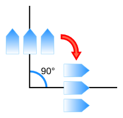
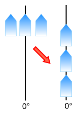

Abstract
CSS3 Writing Modes defines CSS features to support for various
international writing modes, such as left-to-right (e.g. Latin or Indic),
right-to-left (e.g. Hebrew or Arabic), bidirectional (e.g. mixed Latin and
Arabic) and vertical (e.g. Asian scripts).
Inherently bottom-to-top scripts are not handled in this version. See [UTN22] for an
explanation of relevant issues.
Status of this document
This is a public copy of the editors' draft. It is provided for
discussion only and may change at any moment. Its publication here does
not imply endorsement of its contents by W3C. Don't cite this document
other than as work in progress.
The (archived) public
mailing list
www-style@w3.org (see instructions) is preferred for
discussion of this specification. When sending e-mail, please put the text
“css3-writing-modes” in the subject, preferably like this:
“[css3-writing-modes] …summary of
comment…”
This document was produced by the CSS
Working Group (part of the Style Activity).
This document was produced by a group operating under the 5 February 2004 W3C Patent
Policy. W3C maintains a public list of any patent disclosures made in
connection with the deliverables of the group; that page also includes
instructions for disclosing a patent. An individual who has actual
knowledge of a patent which the individual believes contains Essential
Claim(s) must disclose the information in accordance with section 6 of the
W3C Patent Policy.
The following features are at-risk and may be dropped during CR:
Table of Contents
1. Introduction to Writing Modes
CSS3 Writing Modes defines CSS features to support for various
international writing modes, such as left-to-right (e.g. Latin or Indic),
right-to-left (e.g. Hebrew or Arabic), bidirectional (e.g. mixed Latin and
Arabic) and vertical (e.g. Asian scripts).
A writing mode in CSS is determined by the
‘writing-mode’, ‘direction’, and
‘text-orientation’ properties. It is
defined primarily in terms of its inline base direction and block flow direction:
The inline base direction is the
primary direction in which content is ordered on a line and defines on
which sides the "start" and "end" of a line are. The ‘direction’
property specifies the inline base direction of an element and, together
with the ‘unicode-bidi’ property and the inherent
directionality of any text content, determines the ordering of
inline-level content within a line.
The block flow direction is the
direction in which block-level boxes stack and the direction in which line
boxes stack within a block container. The ‘writing-mode’
property determines the block flow direction.
A horizontal writing mode is one
with horizontal lines of text, i.e. a downward or upward block flow. A
vertical writing mode is one with
vertical lines of text, i.e. a leftward or rightward block flow.
These terms should not be confused with vertical block flow (which is a downward or
upward block flow) and horizontal block
flow (which is leftward or rightward block flow). To avoid
confusion, CSS specifications avoid this latter set of terms.
Writing systems typically have one or two native writing modes. Some
examples are:
- Latin-based systems are typically written using a left-to-right inline
direction with a downward (top-to-bottom) block flow direction.
- Arabic-based systems are typically written using a right-to-left
inline direction with a downward (top-to-bottom) block flow direction.
- Mongolian-based systems are typically written using a top-to-bottom
inline direction with a rightward (left-to-right) block flow direction.
- Han-based systems are commonly written using a left-to-right inline
direction with a downward (top-to-bottom) block flow direction,
or a top-to-bottom inline direction with a leftward
(right-to-left) block flow direction. Many magazines and newspapers will
mix these two writing modes on the same page.
The ‘text-orientation’ component of the writing
mode determines the line
orientation and the typesetting mode, and controls details
of text layout such as the glyph orientation.
See Unicode Technical Note #22 [UTN22] (HTML
version) for a more in-depth introduction to writing modes and
vertical text.
1.1. Module Interactions
This module replaces and extends the ‘unicode-bidi’
and ‘direction’ features defined in [CSS21] sections 8.6
and 9.10.
1.2. Document Conventions
Conformance requirements are expressed with a combination of descriptive
assertions and RFC 2119 terminology. The key words “MUST”, “MUST
NOT”, “REQUIRED”, “SHALL”, “SHALL NOT”, “SHOULD”,
“SHOULD NOT”, “RECOMMENDED”, “MAY”, and “OPTIONAL” in the
normative parts of this document are to be interpreted as described in RFC
2119. However, for readability, these words do not appear in all uppercase
letters in this specification.
All of the text of this specification is normative except sections
explicitly marked as non-normative, examples, and notes. [RFC2119]
Examples in this specification are introduced with the words “for
example” or are set apart from the normative text with
class="example", like this:
This is an example of an informative example.
Informative notes begin with the word “Note” and are set apart from
the normative text with class="note", like this:
Note, this is an informative note.
1.3. Values
This specification follows the CSS property
definition conventions from [CSS21]. Value types not defined in
this specification are defined in CSS Level 2 Revision 1 [CSS21]. Other CSS
modules may expand the definitions of these value types: for example [CSS3COLOR],
when combined with this module, expands the definition of the
<color> value type as used in this specification.
In addition to the property-specific values listed in their definitions,
all properties defined in this specification also accept the inherit
keyword as their property value. For readability it has not been repeated
explicitly.
2. Inline Direction and
Bidirectionality
While the characters in most scripts are written from left to right,
certain scripts are written from right to left. In some documents, in
particular those written with the Arabic or Hebrew script, and in some
mixed-language contexts, text in a single (visually displayed) block may
appear with mixed directionality. This phenomenon is called bidirectionality, or "bidi" for short.
The Unicode standard (Unicode Standard Annex #9)
defines a complex algorithm for determining the proper ordering of
bidirectional text. The algorithm consists of an implicit part based on
character properties, as well as explicit controls for embeddings and
overrides. CSS relies on this algorithm to achieve proper bidirectional
rendering. The ‘direction’ and ‘unicode-bidi’
properties allow authors to specify how the elements and attributes of a
document language map to this algorithm.
User agents that support bidirectional text must apply the Unicode
bidirectional algorithm to every sequence of inline-level boxes
uninterrupted by a forced (bidi
class B) paragraph break or block boundary. This sequence forms the
paragraph unit in the bidirectional algorithm.
Except when the ‘plaintext’ value of ‘unicode-bidi’
is in effect, the paragraph embedding level is set according to the value
of the ‘direction’ property of the paragraph's
element rather than by the heuristic given in steps P2 and P3 of the
Unicode algorithm. The paragraph's element is usually the containing
block, but in the case of a paragraph contained by bidi isolation it is the isolating inline element instead.
Because the base directionality of a text depends on the structure and
semantics of the document, the ‘direction’ and ‘unicode-bidi’
properties should in most cases be used only to map bidi information in
the markup to its corresponding CSS styles. If a document language
provides markup features to control bidi, authors and users should use
those features and not specify CSS rules to override them.
The HTML 4 specification ([HTML401], section 8.2) defines
bidirectionality behavior for HTML elements. The HTML 4 specification also
contains more information on bidirectionality issues.
Because HTML UAs can turn off CSS styling, we advise HTML
authors to use the HTML ‘dir’
attribute and <bdo> element to ensure correct bidirectional layout
in the absence of a style sheet.
2.1. Specifying Directionality:
the ‘direction’ property
| Name:
| direction
|
| Value:
| ltr | rtl
|
| Initial:
| ltr
|
| Applies to:
| all elements
|
| Inherited:
| yes
|
| Percentages:
| N/A
|
| Media:
| visual
|
| Computed value:
| specified value
|
This property specifies the base directionality of text and elements on
a line, and the directionality of embeddings and overrides (see ‘unicode-bidi’)
for the Unicode bidirectional algorithm. In addition, it affects the
ordering of table
column layout, the direction of horizontal overflow, and
the default alignment of text within a line, and other things that depend
on the base inline base direction.
Values for this property have the following meanings:
- ltr
- Left-to-right directionality.
- rtl
- Right-to-left directionality.
The ‘direction’ property has no effect on bidi
reordering when specified on inline elements whose ‘unicode-bidi’
property's value is ‘normal’.
The value of the ‘direction’ property on the root element is
also propagated to the initial containing block and, together with the
‘writing-mode’ property, determines the
document's principal writing mode. (See below.)
Note that the ‘direction’ property of the HTML BODY
element is not propagated to the viewport. That special behavior
only applies to the background and overflow properties.
The ‘direction’ property, when specified for
table column elements, is not inherited by cells in the column since
columns are not the ancestors of the cells in the document tree. Thus, CSS
cannot easily capture the "dir" attribute inheritance rules described in
[HTML401],
section 11.3.2.1.
2.2. Embeddings and
Overrides: the ‘unicode-bidi’ property
| Name:
| unicode-bidi
|
| Value:
| normal | embed | [ isolate || bidi-override ] | plaintext
|
| Initial:
| normal
|
| Applies to:
| all elements, but see prose
|
| Inherited:
| no
|
| Percentages:
| N/A
|
| Media:
| visual
|
| Computed value:
| specified value
|
Values for this property have the following meanings:
- normal
- The element does not open an additional level of embedding with
respect to the bidirectional algorithm. For inline elements, implicit
reordering works across element boundaries.
- embed
- If the element is inline, this value opens an additional level of
embedding with respect to the bidirectional algorithm. The direction of
this embedding level is given by the ‘
direction’ property. Inside the element,
reordering is done implicitly. This corresponds to adding a LRE (U+202A),
for ‘direction: ltr’, or RLE (U+202B),
for ‘direction: rtl’, at the start of
the element and a PDF (U+202C) at the end of the element. This value has no effect on elements that are not
inline.
- isolate
- For the purposes of the Unicode bidirectional algorithm, the contents
of the element are considered to be inside a separate, independent
paragraph with a base directionality given by the element's ‘
direction’
property, and for the purpose of bidi resolution in its containing bidi
paragraph (if any), the element itself is treated as if it were an Object
Replacement Character (U+FFFC). (If the element is broken across multiple
lines, then each box of the element is treated as an Object Replacement
Character.)
- bidi-override
- For inline elements this creates an override. For block-container
elements this creates an override for inline-level descendants not within
another block container element. This means that inside the element,
reordering is strictly in sequence according to the ‘
direction’
property; the implicit part of the bidirectional algorithm is ignored.
This corresponds to adding a LRO (U+202D), for ‘direction: ltr’, or RLO (U+202E), for ‘direction: rtl’, at the start of the element and a
PDF (U+202C) at the end of the element.
- plaintext
-
For the purposes of the Unicode bidirectional algorithm, the base
directionality of each bidi paragraph for which the element forms the
containing block is determined not by the element's computed ‘direction’ as
usual, but by following the heuristic in rules P2 and P3 of the Unicode
bidirectional algorithm. For inline elements, this value behaves as for
‘isolate’,
except, as with block containers, the base directionality is determined
by following the Unicode heuristic instead of by using the ‘direction’
value.
The final order of characters within in each bidi paragraph is the same
as if the bidi control codes had been added as described above, markup had
been stripped, and the resulting character sequence had been passed to an
implementation of the Unicode bidirectional algorithm for plain text that
produced the same line-breaks as the styled text.
In this process, replaced elements with ‘display:
inline’ are treated as neutral characters, unless their
‘unicode-bidi’ property has a value other
than ‘normal’, in which case they are treated as
strong characters in the ‘direction’ specified for the element. All
other atomic inline-level boxes are treated as neutral characters always.
If an inline element is broken around a bidi paragraph boundary (e.g. if
split by a block or forced paragraph break), then the bidi control codes
corresponding to the end of the element are added before the interruption
and the codes corresponding to the start of the element are added after
it. (In other words, any embedding levels or overrides started by the
element are closed at the paragraph break and reopened on the other side
of it.)
Because the Unicode algorithm has a limit of 61 levels of
embedding, care should be taken not to use ‘unicode-bidi’ with a value other
than ‘normal’ unless appropriate. In particular,
a value of ‘inherit’ should be
used with extreme caution. However, for elements that are, in general,
intended to be displayed as blocks, a setting of ‘unicode-bidi: isolate’ is preferred to keep the
element together in case display is changed to inline (see example below).
2.3. Example of Bidirectional
Text
The following example shows an XML document with bidirectional text. It
illustrates an important design principle: document language designers
should take bidi into account both in the language proper (elements and
attributes) and in any accompanying style sheets. The style sheets should
be designed so that bidi rules are separate from other style rules, and
such rules should not be overridden by other style sheets so that the
document language's bidi behavior is preserved.
In this example, lowercase letters stand for inherently left-to-right
characters and uppercase letters represent inherently right-to-left
characters. The text stream is shown in logical backing store order.
<HEBREW>
<PAR>HEBREW1 HEBREW2 english3 HEBREW4 HEBREW5</PAR>
<PAR>HEBREW6 <EMPH>HEBREW7</EMPH> HEBREW8</PAR>
</HEBREW>
<ENGLISH>
<PAR>english9 english10 english11 HEBREW12 HEBREW13</PAR>
<PAR>english14 english15 english16</PAR>
<PAR>english17 <HE-QUO>HEBREW18 english19 HEBREW20</HE-QUO></PAR>
</ENGLISH>
Since this is arbitrary XML, the style sheet is responsible for setting
the writing direction. This is the style sheet:
/* Rules for bidi */
HEBREW, HE-QUO {direction: rtl; unicode-bidi: embed;}
ENGLISH {direction: ltr; unicode-bidi: embed;}
/* Rules for presentation */
HEBREW, ENGLISH, PAR {display: block;}
EMPH {font-weight: bold;}
The HEBREW element is a block with a right-to-left base direction, the
ENGLISH element is a block with a left-to-right base direction. The PARs
are blocks that inherit the base direction from their parents. Thus, the
first two PARs are read starting at the top right, the final three are
read starting at the top left. Please note that HEBREW and ENGLISH are
chosen as element names for explicitness only; in general, element names
should convey structure without reference to language.
The EMPH element is inline-level, and since its value for ‘unicode-bidi’ is ‘normal’ (the initial
value), it has no effect on the ordering of the text. The HE-QUO element,
on the other hand, creates an embedding.
The formatting of this text might look like this if the line length is
long:
5WERBEH 4WERBEH english3 2WERBEH 1WERBEH
8WERBEH 7WERBEH 6WERBEH
english9 english10 english11 13WERBEH 12WERBEH
english14 english15 english16
english17 20WERBEH english19 18WERBEH
Note that the HE-QUO embedding causes HEBREW18 to be to the right of
english19.
If lines have to be broken, it might be more like this:
2WERBEH 1WERBEH
-EH 4WERBEH english3
5WERB
-EH 7WERBEH 6WERBEH
8WERB
english9 english10 en-
glish11 12WERBEH
13WERBEH
english14 english15
english16
english17 18WERBEH
20WERBEH english19
Because HEBREW18 must be read before english19, it is on the line above
english19. Just breaking the long line from the earlier formatting would
not have worked. Note also that the first syllable from english19 might
have fit on the previous line, but hyphenation of left-to-right words in
a right-to-left context, and vice versa, is usually suppressed to avoid
having to display a hyphen in the middle of a line.
2.4. Box model for inline
elements in bidirectional context
Since bidi reordering can split apart and reorder text that is logically
contiguous, bidirectional text can cause an inline boxes to be split and
reordered within a line.
Note that in order to be able to flow inline boxes in a
uniform direction (either entirely left-to-right or entirely
right-to-left), anonymous inline boxes may have to be created.
For each line box, UAs must take the inline boxes generated for each
element and render the margins, borders and padding in visual order (not
logical order). The start-most box on the
first line box in which the element appears has the start edge's margin, border, and padding; and the
end-most box on the last line box in which the element appears has the end edge's margin, border, and padding. For
example, in the ‘horizontal-tb’ writing mode:
- When the parent's ‘
direction’ property is ‘ltr’, the left-most
generated box of the first line box in which the element appears has the
left margin, left border and left padding, and the right-most generated
box of the last line box in which the element appears has the right
padding, right border and right margin.
- When the parent's ‘
direction’ property is ‘rtl’, the right-most
generated box of the first line box in which the element appears has the
right padding, right border and right margin, and the left-most generated
box of the last line box in which the element appears has the left
margin, left border and left padding.
Analogous rules hold for vertical writing modes.
The ‘box-decoration-break’ property can override
this behavior to draw box decorations on both sides of each box. [CSS3BG]
3. Introduction to Vertical
Text
This subsection is non-normative.
In addition to extensions to CSS2.1’s support for bidirectional
text, this module introduces the rules and properties needed to support
vertical text layout in CSS.
Unlike languages that use the Latin script which are primarily laid out
horizontally, Asian languages such as Chinese and Japanese can be laid out
vertically. The Japanese example below shows the same text laid out
horizontally and vertically. In the horizontal case, text is read from
left to right, top to bottom. For the vertical case, the text is read top
to bottom, right to left. Indentation from the left edge in the
left-to-right horizontal case translates to indentation from the top edge
in the top-to-bottom vertical case.
For Chinese and Japanese lines are ordered either right to
left or top to bottom, while for Mongolian and Manchu lines are ordered
left to right.
The change from horizontal to vertical writing can affect not just the
layout, but also the typesetting. For example, the position of a
punctuation mark within its spacing box can change from the horizontal to
the vertical case, and in some cases alternate glyphs are used.
Vertical text that includes Latin script text or text from other scripts
normally displayed horizontally can display that text in a number of ways.
For example, Latin words can be rotated sideways, or each letter can be
oriented upright:
In some special cases such as two-digit numbers in dates, text is fit
compactly into a single vertical character box:
Layouts often involve a mixture of vertical and horizontal elements:
Vertical text layouts also need to handle bidirectional text layout;
clockwise-rotated Arabic, for example, is laid out bottom-to-top.
3.1. Block Flow Direction:
the ‘writing-mode’ property
| Name:
| writing-mode
|
| Value:
| horizontal-tb | vertical-rl | vertical-lr
|
| Initial:
| horizontal-tb
|
| Applies to:
| All elements except table row groups, table column groups, table
rows, and table columns
|
| Inherited:
| yes
|
| Percentages:
| N/A
|
| Media:
| visual
|
| Computed value:
| specified value
|
This property sets the block flow direction. Possible values:
- horizontal-tb
- Top-to-bottom block flow. The writing mode is horizontal.
- vertical-rl
- Right-to-left block flow. The writing mode is vertical.
- vertical-lr
- Left-to-right block flow. The writing mode is vertical.
The ‘writing-mode’ property determines the
direction of block flow. This determines the progression of block-level
boxes in a block formatting context; the progression of line boxes in a
block container that contains inlines; and the progression of rows in a
table. By virtue of determining the stacking direction of line boxes, the
‘writing-mode’ property also determines
whether line boxes and thus the writing mode is horizontal or vertical.
When set on the root element, the ‘writing-mode’ property together with the
‘direction’ property determines the principal writing mode of the document.
This writing mode is used, for example, to determine the default page
progression direction. (See [CSS3PAGE].) The ‘writing-mode’
value of the root element is also propagated to the initial containing
block and sets the block flow direction of the initial block formatting
context.
Note that the ‘writing-mode’ property of the HTML BODY
element is not propagated to the viewport. That special behavior
only applies to the background and overflow properties.
If an element has a different block flow direction than its containing
block:
- If the element has a specified ‘
display’ of ‘inline’, its ‘display’ computes to ‘inline-block’. [CSS21]
- If the element has a specified ‘
display’ of ‘run-in’, its ‘display’ computes to ‘block’. [CSS21]
If such an element is a block container, then it establishes a new block
formatting context.
The content of replaced elements do not rotate due to the writing mode:
images, for example, remain upright. However replaced content involving
text (such as MathML content or form elements) should match the replaced
element's writing mode and line orientation if the UA supports such a
vertical writing mode for the replaced content.
In the following example, two block elements (1 and 3) separated by an
image (2) are presented in various flow writing modes.
Here is a diagram of horizontal writing mode (writing-mode:
horizontal-tb):

Here is a diagram for the right-to-left vertical writing mode commonly
used in East Asia (writing-mode: vertical-rl):

And finally, here is a diagram for the left-to-right vertical writing
mode used for Manchu and Mongolian (writing-mode:
vertical-lr):

In the following example, some form controls are rendered inside a
block with ‘vertical-rl’ writing mode. The form controls
are rendered to match the writing mode.
<style>
form { writing-mode: vertical-rl; }
</style>
...
<form>
<p><label>姓名 <input value="艾俐俐"></label>
<p><label>语文 <select><option>English
<option>français
<option>فارسی
<option>中文
<option>日本语</select></label>
</form>

In this example, ‘writing-mode’ sets the list markers
upright using the ‘::marker’
pseudo-element. Vertical alignment ensures that longer numbers will still
align with the right of the first line of text. [CSS3LIST]
::marker { writing-mode: horizontal-tb;
vertical-align: text-top;
color: blue; }
SVG1.1 [SVG11]
defines some additional values: ‘lr’,
‘lr-tb’, ‘rl’, ‘rl-tb’,
‘tb’, and ‘tb-rl’.
These values are deprecated in any context except SVG1
documents. Implementations that wish to support these values in the
context of CSS must treat them as follows:
The SVG1.1 values were also present in an older revision of
the CSS ‘writing-mode’ specification, which is
obsoleted by this specification. The additional ‘tb-lr’ value of that revision is replaced by
‘vertical-lr’.
In SVG1.1, these values set the inline progression direction, in
other words, the direction the current text position advances each time a
glyph is added. This is a geometric process that happens after bidi reordering, and thus has no effect
on the interpretation of the ‘direction’ property (which is independent
of ‘writing-mode’). (See Relationship
with bidirectionality. [SVG11])
There are varying interpretations on whether this process
causes "writing-mode: rl" to merely shift the text string or reverse the
order of all glyphs in the text.
4. Inline-level Alignment
When different kinds of inline-level content are placed together on a
line, the baselines of the content and the settings of the ‘vertical-align’ property control how they are
aligned in the transverse direction of the line box. This section
discusses what baselines are, how to find them, and how they are used
together with the ‘vertical-align’
property to determine the alignment of inline-level content.
4.1. Introduction to
Baselines
This section is non-normative.
A baseline is a line along the inline axis
of a line box along which individual glyphs of text are aligned. Baselines
guide the design of glyphs in a font (for example, the bottom of most
alphabetic glyphs typically align with the alphabetic baseline), and they
guide the alignment of glyphs from different fonts or font sizes when
typesetting.
[Picture of alphabetic text in two font sizes with the
baseline and emboxes indicated.]
Different writing systems prefer different baseline tables.
A well-constructed font contains a baseline
table, which indicates the position of one or more baselines within
the font's design coordinate space. (The design coordinate space is scaled
with the font size.)
The baseline table is a property of the font, and the positions of the
various baselines apply to all glyphs in the font.
Different baseline tables can be provided for alignment in horizontal
and vertical text. UAs should use the vertical tables in vertical
typesetting modes and the horizontal tables otherwise.
4.2. Text Baselines
In this specification, only the following baselines are considered:
- alphabetic
- The alphabetic baseline, which
typically aligns with the bottom of uppercase Latin glyphs. In horizontal
typographic mode, this is the dominant baseline.
- central
- The central baseline, which typically
crosses the center of the em box. In vertical typographic mode, this is
the dominant baseline. If the font is missing this baseline, it is
assumed to be halfway between the ascender (over) and descender (under) edges of the em box.
A future CSS module will deal with baselines in more detail
and allow the choice of other dominant baselines and alignment options.
4.3. Atomic Inline
Baselines
If an atomic
inline (such as an inline-block, inline-table, or replaced inline
element) is not capable of providing its own baseline information, then
the UA synthesizes a baseline table thus:
- alphabetic
- The alphabetic baseline is assumed to be at the under margin edge.
- central
- The central baseline is assumed to be halfway between the under and over margin
edges of the box.
4.4. Baseline Alignment
The dominant baseline (which can change based on the writing mode) is used
in CSS for alignment in two cases:
- Aligning glyphs from different fonts within the same inline
box. The glyphs are aligned by matching up the positions of the
dominant baseline in their corresponding fonts.
- Aligning a child inline-level box within its parent.
For the ‘
vertical-align’ value of
‘baseline’,
child is aligned to the parent by matching the parent's dominant baseline
to the same baseline in the child. (E.g. if the parent's dominant
baseline is alphabetic, then the child's alphabetic baseline is matched
to the parent's alphabetic baseline, even if the child's dominant
baseline is something else.) For values of ‘sub’, ‘super’,
‘<length>’, and ‘<percentage>’, the baselines are aligned as
for ‘baseline’, but the child is shifted according
to the offset given by its ‘vertical-align’ value.
Given following sample markup:
<p><span class="outer">Ap <span class="inner">ji</span></span></p>
And the following style rule:
span.inner { font-size: .75em; }
The baseline tables of the parent (.outer) and the child
(.inner) will not match up due to the font size
difference. Since the dominant baseline is the alphabetic baseline, the
child box is aligned to its parent by matching up their alphabetic
baselines.
If we assign ‘vertical-align:
super’ to the .inner element from the example
above, the same rules are used to align the .inner child
to its parent; the only difference is in addition to the baseline
alignment, the child is shifted to the superscript position.
span.inner { vertical-align: super; font-size: .75em; }
5. Introduction to
Vertical Text Layout
Each writing system has one or more native orientations. Modern scripts
can therefore be classified into three orientational categories:
- horizontal-only
- Scripts that have horizontal, but not vertical, native orientation.
Includes: Latin, Arabic, Hebrew, Devanagari
- vertical-only
- Scripts that have vertical, but not horizontal, native orientation.
Includes: Mongolian, Phags Pa
- bi-orientational
- Scripts that have both vertical and horizontal native orientation.
Includes: Han, Hangul, Japanese Kana
In modern typographic systems, all glyphs are assigned a horizontal
orientation, which is used when laying out text horizontally. To lay out
vertical text, the UA needs to transform the text from its horizontal
orientation. This transformation is the bi-orientational transform, and there
are two types:
- rotate
- Rotate the glyph from horizontal to vertical 
- translate
- Translate the glyph from horizontal to vertical 
Scripts with a native vertical orientation have an intrinsic
bi-orientational transform, which orients them correctly in vertical text:
CJK (Chinese/Japanese/Korean) characters translate, that is, they are
always upright. Other scripts, such as Mongolian, rotate. (See Appendix B for a list of intrinsic
bi-orientational transforms.)
Scripts without a native vertical orientation can be either rotated (set
sideways) or translated (set upright): the transform used is a stylistic
preference depending on the text's usage, rather than a matter of
correctness. The ‘text-orientation’ property's ‘upright-right’ and
‘upright’ values
are provided to specify rotation vs. translation of horizontal-only text.
The ‘sideways-left’, ‘sideways-right’,
and ‘sideways’
values of ‘text-orientation’ are provided for
decorative layout effects and to work around limitations in CSS support
for bottom-to-top scripts.
Ideally, punctuation should be either sideways or upright
depending on whether the primary script is horizontal-only or vertical.
However, this information (which, like the base directionality, is a
property of the content) is not available to us. (UTN 22 used the concept
of a vertical directionality, given via ‘direction’ or the HTML dir
attribute to handle this issue.) The current spec works around this by
using the East Asian Width property; but this approach only works if
vertical scripts do not share punctuation with horizontal-only scripts.
5.1. Orienting Text: the
‘text-orientation’ property
| Name:
| text-orientation
|
| Value:
| upright-right | upright | sideways-right | sideways-left | sideways
| use-glyph-orientation
|
| Initial:
| upright-right
|
| Applies to:
| all elements except table row groups, rows, column groups, and
columns
|
| Inherited:
| yes
|
| Percentages:
| N/A
|
| Media:
| visual
|
| Computed value:
| specified value
|
This property specifies the orientation of characters within a line and
sets the orientation of the line. Current values only have an effect in
vertical writing modes.
For readability, the term character is
used in place of extended grapheme cluster in this section. See
Characters and Properties for further
details.
Values have the following meanings:
- upright-right
-
In vertical writing modes, characters from horizontal-only scripts are
set sideways, i.e. 90° clockwise from their standard orientation in
horizontal text. Characters from vertical scripts are set with their
intrinsic orientation.
In vertical writing modes, this value puts the element in a
vertical typographic mode and is typical for layout of primarily
vertical-script text.
- upright
-
In vertical writing modes, characters from horizonal-only scripts are
rendered upright, i.e. in their standard horizontal orientation. Shaping
characters from such scripts are shaped in their isolated forms.
Characters from vertical scripts are set with their intrinsic
orientation and shaped normally. When available, vertical glyph variants
and vertical font metrics are used to set the text. The UA must
synthesize vertical font metrics for grapheme clusters that do not have
any.
For the purposes of bidi reordering, this value causes all characters
to be treated as strong LTR. This value causes the used value of
‘direction’ to be ‘ltr’.
In vertical writing modes, this value puts the element in a
vertical typographic mode.
- sideways-right
-
In vertical writing modes, this causes text to be set as if in a
horizontal layout (using horizontal glyph variants and metrics), but
rotated 90° clockwise. This value puts the element in a
horizontal typographic mode.
- sideways-left
-
In vertical writing modes, this causes text to be set as if in a
horizontal layout (using horizontal glyph variants and metrics), but
rotated 90° counter-clockwise. This value puts the element in a
horizontal typographic mode.
If set on a non-replaced inline whose parent is not ‘sideways-left’,
this forces bidi isolation: the ‘normal’ and ‘embed’ values of ‘unicode-bidi’ compute to ‘isolate’, and ‘bidi-override’
computes to ‘bidi-override isolate’.
Layout of text is exactly as for ‘sideways-right’ except that the text content
and baseline table of each of the element's inline boxes is mirrored
around a vertical axis along the center of its content box. The
positions of text decorations propagated from an ancestor inline
(including the block container's root inline) are not mirrored, but any
text decorations introduced by the element are positioned using the
mirrored baseline table.
Similarly, if an inline child of the element has a ‘text-orientation’ value other than
‘sideways-left’, an analogous transformation
(and bidi isolation) is applied.
- sideways
-
This value is equivalent to ‘sideways-right’ in ‘vertical-rl’
writing mode and equivalent to ‘sideways-left’ in ‘vertical-lr’
writing mode. It can be useful when setting horizontal script text
vertically in a primarily horizontal-only document.
- use-glyph-orientation
-
[SVG11] defines
‘glyph-orientation-vertical’ and
‘glyph-orientation-horizontal’
properties that were intended to control text orientation. These
properties are deprecated and do not apply to non-SVG elements.
If an implementation supports these properties, the ‘use-glyph-orientation’ value when set on SVG
elements indicates that the SVG ‘glyph-orientation-vertical’ and ‘glyph-orientation-horizontal’ behavior
control the layout of text. Such UAs must set ‘text-orientation: glyph-orientation’ on all SVG
text content elements in their default UA style sheet for SVG.
In all other contexts, and for implementations that do not support the
glyph orientation properties, the ‘use-glyph-orientation’ behavior is the same
as for ‘upright-right’.
This value is at-risk and may be dropped during CR.
The orientation of characters belonging to the Common, Inherited, and
Unknown script categories may be UA- or font-dependent in vertical
typographic modes:
-
If the font and font system support mixed-orientation typesetting, the
UA may rely on that feature to typeset such characters for ‘upright-right’
text. Similarly if the font and font system support upright typesetting
then the UA may rely on that feature to set ‘upright’ text.
-
Otherwise the UA must synthesize such features. The settings in Appendix C are recommended.
A future revision of this spec will normatively define
vertical typsetting rules for these characters. Feedback is therefore
encouraged on the rules in Appendix C.
In the following example, the root element of a horizontal-only
document is set to use ‘sideways’. In the rest of the document, the
author can just set ‘writing-mode’ without worrying about
whether the text is ‘vertical-rl’ or ‘vertical-lr’.
:root { text-orientation: sideways; }
caption { caption-side: left; writing-mode: vertical-lr; }
thead th { writing-mode: vertical-lr; }
h1.banner { position: absolute; top: 0; right: 0; writing-mode: vertical-rl; }
6. Abstract Box Terminology
[CSS21] defines
the box layout model of CSS in detail. However, it only defines the box
model for the ‘horizontal-tb’ writing mode. CSS box layout in
writing modes other than ‘horizontal-tb’ is analogous to the box layout
defined in CSS2.1 if directions and dimensions are abstracted and remapped
appropriately. This section defines abstract directional and dimensional
terms and their mappings in order to define box layout for other writing
modes, and to provide terminology for future specs to define their layout
concepts abstractly.
6.1. Logical
Dimensions
- block flow dimension
- The dimension perpendicular to the flow of text with in a line, the
vertical dimension in horizontal writing modes, and the
horizontal dimension in vertical writing modes.
- inline dimension
- The dimension parallel to the flow of text within a line, i.e. the
horizontal dimension in horizontal writing modes, and the
vertical dimension in vertical writing modes.
- inline-axis
- The axis in the block flow dimension, i.e. the vertical axis in
horizontal writing modes and the horizontal axis in vertical
writing modes.
- block-axis
- The axis in the inline dimension, i.e. the horizontal axis in
horizontal writing modes and the vertical axis in vertical writing
modes.
- extent or logical
height
-
- A measurement in the block flow dimension: refers to the physical
height (vertical dimension) in horizontal writing modes, and to the
physical width (horizontal dimension) in vertical writing modes.
- measure or logical
width
-
- A measurement in the inline dimension: refers to the physical width
(horizontal dimension) in horizontal writing modes, and to the physical
height (vertical dimension) in vertical writing modes. (The term measure derives from its use in
typography.)
6.2. Abstract and
Physical Directions
The terms left, right, top, and bottom are always interpreted
physically, i.e. with respect to the page independent of writing mode. Two
abstract mappings are possible for these directions: line-relative and
flow-relative, which are defined below.
Although they derive from the behavior of text, these directional terms
exist even for boxes that do not contain any line boxes: they are
calculated directly from the values of the ‘writing-mode’,
‘text-orientation’, and ‘direction’
properties.
6.3. Line-relative
Directions
Although the block flow direction given by ‘writing-mode’
determines whether the line is oriented horizontally or vertically, it
doesn't say anything about how the contents within the line are arranged.
The line-relative directions are
over, under, line-left, and line-right. The line orientation, which is given by a
combination of ‘text-orientation’ and ‘writing-mode’,
determines which side of the line is the "top" and thus which sides are
under (ascender side) and over
(descender side) the line. The line orientation also affects the
interpretation of alignment (‘vertical-align’) in the transverse dimension
of the line.
In addition to its over and under sides, a line box, even a
vertically-oriented one, also has a "left" and "right" side, which we will
call the line-left and line-right sides of the box (as distinct
from the physical left and physical right sides of the box). The line-left edge of a box is nominally the edge from
which LTR text would start. The line-right edge of a box is nominally the edge from
which RTL text would start. Depending on
the ‘writing-mode’ and ‘text-orientation’ properties, the
line-left side of a box could be on the physical left, top, or bottom.
Note also that while the over and
under directions often map to the same
directions as before and after
respectively, this mapping is reversed for some combinations of ‘writing-mode’
and ‘text-orientation’.
6.4. Flow-relative
Directions
The flow-relative directions are
before, after, start, and end. In an LTR ‘horizontal-tb’ writing mode, they correspond to
the top, bottom, left, and right directions, respectively.
The before edge of a box is nominally the edge that
comes earlier in the block progression, as determined by the ‘writing-mode’
property. Similarly the after edge is the edge that
comes later in the progression.
The start edge of a box is nominally the edge from
which text of its inline base direction will start. For boxes with a used
‘direction’ value of ‘ltr’, this means the line-left edge. For boxes with a used
‘direction’ value of ‘rtl’, this means the line-right edge. The edge opposite the start
edge is the end edge.
Note that while determining the before and after
edges of a box depends only on the ‘writing-mode’ property, determining the start and end edges of
a box depends not only on the ‘writing-mode’ property but also the
‘direction’ and ‘text-orientation’ properties.
An English (LTR-TB) block:
<----- width / measure ----->
top side/
before side
+------------------------------+ A
left side/ | ---inline direction ---> | right side/ |
start side | | | end side |
| | block * horizontal * | height/
| | direction *writing mode* | extent
| V | |
+------------------------------+ V
bottom side/
after side
A vertical Japanese block (TTB-RL):
<----- width / extent ------>
top side/
start side
+------------------------------+ A
left side/ | <---block direction--- | right side/ |
after side | | | before side |
| * vertical * inline| | height/
| *writing mode* direction| | measure
| V | |
+------------------------------+ V
bottom side/
end side
6.5.
Abstract-to-Physical Mappings
The following table summarizes the abstract-to-physical mappings:
7. Abstract Box Layout
7.1. Principles of Layout
in Vertical Writing Modes
CSS box layout in vertical writing modes is analogous to layout in the
horizontal writing modes, following the principles outlined below:
Layout calculation rules (such as those in CSS2.1, Section 10.3) that
apply to the horizontal dimension in horizontal writing modes instead
apply to the vertical dimension in vertical writing modes. Likewise,
layout calculation rules (such as those in CSS2.1, Section 10.6) that
apply to the vertical dimension in horizontal writing modes instead apply
to the horizontal dimension in vertical writing modes. Thus:
-
Layout rules that refer to the width use the height instead, and vice
versa.
-
Layout rules that refer to the ‘*-left’ and ‘*-right’ box properties (border, margin, padding)
use ‘*-top’ and ‘*-bottom’ instead, and vice versa. Which side of
the box the property applies to doesn't change: only which values are
inputs to which layout calculations changes. The ‘margin-left’ property still affects the
lefthand margin, for example; however in a ‘vertical-rl’
writing mode it takes part in margin collapsing in place of ‘margin-bottom’.
-
Layout rules that depend on the ‘direction’ property to choose between
left and right (e.g. overflow, overconstraint resolution, the initial
value for ‘text-align’, table
column ordering) are abstracted to the start and end sides and applied appropriately.
For example, in vertical writing modes, table rows are vertical and
table columns are horizontal. In a ‘vertical-rl’ ‘upright-right’
‘rtl’ table, the
first column would be on the bottom (the start side), and the first row
on the right (the before side). The table's ‘margin-right’ and ‘margin-left’ would collapse with margins
before (on the right) and after (on the left) the table, respectively,
and if the table had ‘auto’ values for
‘margin-top’ and ‘margin-bottom’ it would be centered
vertically within its block flow.
For features such as text alignment, floating, and list marker
positioning, that primarily reference the left or right sides of the line
box or its longitudinal parallels and therefore have no top or bottom
equivalent, the line left and line right sides are used as the reference for the
left and right sides respectively.
Likewise for features such as underlining, overlining, and baseline
alignment (the unfortunately-named ‘vertical-align’), that primarily reference the
top or bottom sides of the linebox or its transversal parallels and
therefore have no left or right equivalent, the over
and under sides are used as the reference for the top
and bottom sides respectively.
The details of these mappings are provided below.
7.2. Dimensional Mapping
Certain properties behave logically as follows:
- The first and second values of the ‘
border-spacing’ property represent spacing
between columns and rows respectively, not necessarily the horizontal and
vertical spacing respectively. [CSS21]
- The ‘
line-height’ property
always refers to the logical height. [CSS21]
The height properties (‘height’,
‘min-height’, and ‘max-height’) refer to the physical height, and
the width properties (‘width’,
‘min-width’, and ‘max-width’) refer to the physical width.
However, the rules used to calculate box dimensions and positions are
logical.
For example, the calculation rules in CSS2.1
Section 10.3 are used for the inline dimension measurements: they
apply to the measure (which could be either the physical width or physical
height) and to the the start and end margins, padding, and border.
Likewise the calculation rules in CSS2.1
Section 10.6 are used in the block dimension: they apply to the extent
and to the before and after margins, padding, and border. [CSS21]
As a corollary, percentages on the margin and padding properties, which
are always calculated with respect to the containing block width in
CSS2.1, are calculated with respect to the measure of the containing block in CSS3.
7.3. Orthogonal Flows
When an element has a different ‘writing-mode’ from its containing block
two cases are possible:
To handle the second case, CSS layout calculations are divided into two
phases: sizing a box, and positioning the box within its flow. In the
sizing phase—calculating the width and height of the box—the
dimensions of the box and the containing block are mapped to the measure
and extent and calculations performed accordingly using the writing mode
of the element. In the positioning phase—calculating the positioning
offsets, margins, borders, and padding—the dimensions of the box and
its containing block are mapped to the measure and extent and calculations
performed according to the writing mode of the containing block.
For example, if a vertical block is placed inside a horizontal block,
then when calculating the physical height (which is the measure) of the
child block the physical height of the parent block is used to calculate
the measure of the child's containing block, even though the physical
height is the extent, not the measure, of the parent block.
Since auto margins are resolved consistent with the containing block's
writing mode, a box establishing an orthogonal flow, can, once sized, be
aligned or centered within its containing block just like other
block-level elements by using auto margins.
It is common in CSS for a containing block to have a defined measure,
but not a defined extent. This typically happens in CSS2.1 when a
containing block has an ‘auto’ height,
for example: its width is given by the calculations in 10.3.3, but
its extent depends on its contents. In such cases the available measure is defined as the measure of
the containing block; but the available
extent, which would otherwise be the extent of the containing block,
is infinite.
Orthogonal flows allow the opposite to happen: for the available extent to be defined, but
the available measure to be
infinite. In such cases a percentage of the containing block measure
cannot be defined, and thus the initial containing block's size is used
instead as a fallback measure to
calculate such percentages.
7.3.1. Auto-sizing in
Orthogonal Flows
If the computed measure of an element establishing an orthogonal flow is
‘auto’, then the used measure is
calculated as the fit-content
(shrink-to-fit) size using the initial containing block's size as the
available measure.
7.3.2. Multi-column
Layout in Orthogonal Flows
If the UA supports CSS Multi-column Layout [CSS3COL], then for the case where
the element's extent or available extent is defined but the element's
measure is ‘auto’:
- If ‘
column-count’ and
‘column-width’ are both
‘auto’, a used ‘column-width’ is calculated for the element
as the fill-available
measure using the fallback
measure as the available
measure.
- If the columns' extent is not fixed, the fill-available extent of the
element is used.
- The used column-count then follows from filling the resulting columns
with the element's content.
The used measure of the resulting multi-column element is then
calculated: if the content neither wraps nor paginates within the
multi-column element, then the used measure is the max-content measure of the
element's contents; else it is calculated from the used column width,
column count, and column gap.
The used extent of the element is either the used column extent (if
multiple columns were used) or the max-content extent of the content.
This should behave the same as the auto-sizing algorithm
defined in the previous section, except overflowing content, instead of
continuing off the side of the containing block, is wrapped into columns
in the flow direction of the containing block, thus avoiding T-shaped
documents.
This section is informative.
With regards to pagination, the rules in CSS2.1 still hold in vertical
writing modes and orthogonal flows: page break opportunities do not occur
inside line boxes, only between them. UAs that support [CSS3COL] may break in the
(potentially zero-width) gap between columns, however.
Note that if content spills outside the pagination stream established by
the root element, the UA is not required to print such content. Authors
wishing to mix writing modes with long streams of text are thus encouraged
to use CSS columns to keep all content flowing in the document's
pagination direction.
In other words, if your document would require two scrollbars on the
screen it probably won't all print. Fix your layout, e.g. by using columns so that it all
scrolls (and therefore paginates) in one direction if you want to make
sure it'll all print. T-shaped documents tend not to print well.
7.4.
Flow-Relative Mappings
Flow-relative directions are calculated with respect to the writing mode
of the containing block of the element and used to abstract
layout rules related to the box properties (margins, borders, padding) and
any properties related to positioning the box within its containing block
(‘float’, ‘clear’, ‘top’, ‘bottom’, ‘left’, ‘right’) For inline-level elements, the
writing mode of the parent element is used instead.
For example, the margin that is dropped when a box's inline dimension is
over-constrained
is the end margin as determined by the writing mode of the containing
block.
The margin
collapsing rules apply exactly with the before margin
substituted for the top margin and the after margin substituted
for the bottom margin. Similarly the before padding and border are
substituted for the top padding and border, and the after padding and
border substituted for the bottom padding and border. Note this means only
before and after margins ever collapse.
Flow-relative directions are calculated with respect to the writing mode
of the element and used to abstract layout related to the element's
contents:
- The initial value of the ‘
text-align’ property aligns to the start edge
of the line box.
- The ‘
text-indent’ property
indents from the start edge of the line box.
- For tables, the ordering of columns begins on the start side of the
table, and the ordering of rows begins on the before side of the table.
7.5. Line-Relative Mappings
The line-relative directions are
over, under, line-left, and line-right.
In an LTR ‘horizontal-tb’
writing mode, they correspond to the top, bottom, left, and right
directions, respectively.
The line-right and line-left directions are calculated with respect to
the writing mode of the element and used to interpret the ‘left’ and ‘right’ values of the
following properties:
The line-right and line-left directions are calculated with respect to
the writing mode of the containing block of the element and used
to interpret the ‘left’ and ‘right’ values of the following properties:
The over and under directions are calculated with respect to the writing
mode of the element and used to define the interpretation of the "top"
(over edge) and "bottom" (under edge) of the line box as follows:
- For the ‘
vertical-align’
property, the "top" of the line box is the over edge; the "bottom" of the
line box is the under edge. Positive length and percentage values shift
the baseline towards the over edge. [CSS21]
- For the ‘
text-decoration’
property, the underline is drawn on the under side of the text; the
overline is drawn on the over side of the text. [CSS21] Note that
the CSS Text Module defines this in more detail and provides additional
controls for controlling the position of underlines and overlines. [CSS3TEXT]
7.6. Purely Physical
Mappings
The following values are purely physical in their definitions and do not
respond to changes in writing mode:
- the ‘
rect()’ notation of the
‘clip’ property [CSS21]
- the background properties [CSS21] [CSS3BG]
- the border-image properties [CSS3BG]
- the offsets of the ‘
box-shadow’ and ‘text-shadow’ properties
7.7. Table Caption Mappings:
the ‘caption-side’ keywords
| Property:
| ‘caption-side’
|
| New Values:
| ‘before’ |
‘after’
|
| Initial:
| before
|
| Applies to:
| same as CSS2.1
|
| Inherited:
| same as CSS2.1
|
| Percentages:
| same as CSS2.1
|
| Media:
| same as CSS2.1
|
| Computed value:
| specified value
|
This module introduces two new values to the ‘caption-side’ property: ‘before’ and ‘after’, which position the
caption before and after the table box, respectively. For tables with
‘horizontal-tb’ writing mode, they are
equivalent to the existing ‘top’ and ‘bottom’ values, respectively. [CSS21]
For implementations that support the ‘top-outside’ and ‘bottom-outside’ model, corresponding
‘before-outside’ and ‘after-outside’ will be similarly introduced.
Implementations that support the ‘top’ and ‘bottom’ values of the ‘caption-side’ property but do not support side
captions (i.e. ‘left’ and ‘right’ captions in horizontal writing modes)
must treat ‘top’ and
‘bottom’ as
‘before’, when
the table is in a vertical writing mode.
For implementations that do support side captions (i.e. the ‘left’ and ‘right’ values from the
obsolete CSS 2.0 specification [CSS2]), this module also introduces
the ‘start’ and
‘end’ values, which
behave similarly and which position the caption on the start and end sides
of the table box, calculated with respect to the writing mode of the table
element. For such implementations, the ‘top’ and ‘bottom’ values must place the caption on the
top and bottom sides of the table box, respectively.
The CSS2.0 side caption model had some problems
and will likely have a different definition in CSS3.
8. Page Flow: the page
progression direction
In paged media CSS2.1 classifies all pages as either left or right
pages. The page progression direction, which determines whether the left
or right page in a spread is first in the flow and whether the first page
is by default a left or right page, depends on the writing direction as
follows:
(Unless otherwise overridden, the first page of a document begins on the
second half of a spread, e.g. on the right page in a left-to-right page
progression.)
| Name:
| text-combine-horizontal
|
| Value:
| none | all | [ [digits <integer> | ascii-digits <integer> ] ||
[ alpha <integer> | latin <integer> ] || alphanumeric
<integer> ] && [ compress | [ no-compress || use-glyphs ] ]?
|
| Initial:
| none
|
| Applies to:
| non-replaced inline elements
|
| Inherited:
| yes
|
| Percentages:
| N/A
|
| Media:
| visual
|
| Computed value:
| specified value
|
This property allows the combination of multiple characters into the
space of a single character. This property only has an effect in vertical
writing modes. Values have the following meanings:
- none
- No special processing.
- all
- In vertical writing mode, attempt to display the text contents of the
element horizontally within the vertical line box, ideally within the
space of one ideographic character. (See below.) The resulting
composition is treated as a single glyph for the purposes of layout and
decoration. If the content contains any element boundaries this is
treated as ‘
text-combine-horizontal:
none’.
- digits
- Within the element, each sequence of consecutive horizontal digits
that has as many or fewer characters than the integer given is treated as
if it were in an anonymous inline box with ‘
text-combine-horizontal: all’. For this property,
a horizontal digit is any character
belonging to a Number category (N*) that does not belong to a vertical script.
- ascii-digits
- Within the element, each sequence of consecutive ASCII digits
(U+0030–U+0039) that has as many or fewer characters than the
integer given is treated as if it were in an anonymous inline box with
‘
text-combine-horizontal: all’.
This definition is would replace ‘digits’ as a simplification.
- alpha
- Within the element, each sequence of consecutive horizontal letters
that has as many or fewer characters than the integer given is treated as
if it were in an anonymous inline box with ‘
text-combine-horizontal: all’. For this property,
a horizonal letter is any character
belonging to a Letter category (L*) that does not belong to a vertical script.
- latin
- Within the element, each sequence of Latin letters that has as many or
fewer characters than the integer given is treated as if it were in an
anonymous inline box with ‘
text-combine-horizontal:
all’. For this property, a Latin
letter is any character belonging to a Letter category (L*) that
also belongs to the Latin script.
This definition is would replace ‘alpha’ as a simplification.
- alphanumeric
- Within the element, each sequence of consecutive horizontal digits
and/or letters that has as many or fewer characters than the integer
given is treated as if it were in an anonymous inline box with
‘
text-combine-horizontal: all’.
- use-glyphs
- If the UA has alternate-width glyphs available for the contents of the
element, then it must use those glyphs to attempt sizing the contents to
1em square. See below.
- compress
- Compress the composition (horizontally) as a whole until it fits
within 1em. Do not substitute alternate-width glyphs.
- no-compress
- Do not compress the composition or perform any glyph substitution in
order to make the composition fit within 1em. This may cause the glyphs
to overflow the line significantly. When combined with ‘
use-glyphs’, this indicates to perform glyph
substitution if possible per ‘use-glyphs’ but not to compress the glyphs if they
do not fit within the size constraints.
All values except ‘all’
are marked at-risk. Which ones should we take to CR?
When combining text as for ‘text-combine-horizontal: all’, the glyphs of the
combined text are stacked horizontally (without line breaks,
letter-spacing, etc., but using the specified font settings), similar to
the contents of an inline-box with a horizontal writing mode and a
line-height of 1em. The effective size of the composition is assumed to be
1em square; anything outside the square is not measured for layout
purposes. The UA should center the glyphs horizontally and vertically
within the measured 1em square. The baseline of the resulting composition
chosen such that the square is centered between the text-over and
text-under baselines of its parent inline box prior to any baseline
alignment shift. For text layout purposes, e.g. bidi ordering,
line-breaking, emphasis marks, text-decoration, etc. the resulting
composition is treated as a single glyph representing the Object
Replacement Character U+FFFC.
If none of ‘compress’, ‘no-compress’, or ‘use-glyphs’ are specified and the contents are
wider than 1em, the UA must attempt to fit the contents within 1em, but
may use any method to do so.
If ‘use-glyphs’ is specified the UA
must attempt to substitute narrower glyphs as necessary to make the
composition fit within 1em:
- a two-character composition would use 1/2-em or proportional glyphs
- a three-character composition would use 1/3-em glyphs (if the font
supports this feature, else fall back to 1/2-em or proportional glyphs)
- etc.
Since even fonts that have fractional-width glyphs available do not have
such glyphs for all characters, if ‘no-compress’ is not specified, the UA must ensure
the expected advance width for ‘use-glyphs’ by either compressing or padding
(equally on both sides) each glyph individually if it does not match the
required advance width. If ‘no-compress’ is specified, then the UA must not
attempt to adjust the width of the glyph even if it differs from the
expected dimension. This may cause the combined text to overflow.
In some fonts, the ideographic glyphs are given a compressed design such
that they are 1em wide but shorter than 1em tall. To accommodate such
fonts, the UA may vertically scale the contents of the composition to
match the advance height of 水 U+6C34.
Any CSS fullwidth transformations (‘text-transform: full-width’ [CSS3TEXT] or ‘font-variant-east-asian-width: full-width’ [CSS3FONT]) are
turned off for combined text of more than one character.
In East Asian documents, the ‘text-combine-horizontal’ effect is often used
to display Latin-based strings such as components of a date or letters of
an initialism, always in a horizontal writing mode regardless of the
writing mode of the line:
The figure is the result of the rules
date { text-combine-horizontal: digits 2; }
and the following markup:
<date>平成20年4月16日に</date>
In Japanese, this effect is known as tate-chu-yoko.
The following example shows that applying ‘text-combine-horizontal: digits 2’ to an entire
document, rather than to a segment with a known type of numeric content,
can have unintended consequences:
<p>あれは10,000円ですよ！</p>
Changes
Major changes include:
Acknowledgements
John Daggett, Martin Heijdra, Yasuo Kida, Tatsuo Kobayashi, Toshi
Kobayashi, Ken Lunde, Nat McCully, Paul Nelson, Kenzou Onozawa, Michel
Suignard, Taro Yamamoto, Steve Zilles
Appendix A. Characters and
Properties
Unicode defines three codepoint-level properties that are referenced in
CSS Writing Modes:
- East Asian
width
- Defined in [UAX11] and given as the
East_Asian_Width property in the Unicode Character Database [UAX44].
- General
Category
- Defined in [UAX44] and given as the
General_Category property in the Unicode Character Database [UAX44].
- Script
property
- Defined in [UAX24] and given as the Script
property in the Unicode Character Database [UAX44]. (UAs should include any
ScriptExtensions.txt assignments in this mapping.)
In several sections (as noted), the term character is defined as extended grapheme
cluster per [UAX29]. It is roughly equivalent to
what a language user considers to be a character or a basic unit of the
script (which might not be a single Unicode codepoint). The UA may further
tailor this definition as allowed by Unicode.
Unicode defines properties for characters, but for ‘text-orientation’ and Vertical Typesetting Synthesis, it
is necessary to determine the properties of a grapheme cluster. For the
purposes of CSS Writing Modes, the properties of a grapheme cluster are
given by its base character—except in two cases:
- Grapheme clusters formed with an Enclosing Mark (Me) of the Common
script are considered to be Other Symbols (So) in the Common script. They
are assumed to have the same Unicode properties as the Replacement
Character U+FFFD.
- Grapheme clusters formed with a Space Separator (Zs) as the base are
considered to be Modifier Symbols (Sk). They are assumed to have the same
East Asian Width property as the base, but take their other properties
from the first combining character in the sequence.
Appendix B: Bi-orientational
Transformations
This section is normative.
This appendix gives the orientational properties of scripts in Unicode
6.0 [UNICODE].
Any script not listed explicitly is assumed to be horizontal-only.
The script classification of Unicode characters is given by [UAX24].
Vertical Scripts and their Bi-orientational Transform
| Code
| Name
| Transform
|
| Bopo
| Bopomofo
| translate
|
| Egyp
| Egyptian Hieroglyphs
| translate
|
| Hira
| Hiragana
| translate
|
| Kana
| Katakana
| translate
|
| Hani
| Han
| translate
|
| Hang
| Hangul
| translate
|
| Mong
| Mongolian
| rotate
|
| Phag
| Phags Pa
| rotate
|
| Yiii
| Yi
| translate
|
Exceptions: For the purposes of this specification, all
fullwidth (F) and wide (W) characters are treated as belonging to a
vertical script with a translate bi-orientational transform. All halfwidth
(H) characters are treated as belonging to a vertical script with a rotate
bi-orientational transform. [UAX11] Neutral (N), narrow (Na) and
ambiguous (A) Letters (L*) belonging to the Common script are treated as
belonging to a horizontal-only script.
Ogham is also a rotating bi-orientational script, but because
it is a bottom-to-top script, for the purposes of this specification it is
treated as left-to-right horizontal. A future version of CSS may define
proper handling of bottom-to-top scripts. Authors can work around this
lack of support with the ‘sideways-left’ value of ‘text-orientation’.
Appendix C: Vertical
Typesetting Synthesis
This appendix is non-normative.
This section defines an algorithm for automatic typesetting of vertical
text. For readability, the term character
is used in place of extended grapheme cluster in this section.
See Characters and Properties for
further details.
This section needs careful review.
When ‘text-orientation’ is either ‘upright-right’ or
‘upright’, the
following settings are recommended:
- Set any spaces (Zs), connectors (Pc), and bracketing punctuation (Ps,
Pe, Pi, Pf) either upright using vertical font settings if available or
sideways if they are not.
Thus a THREE-PER-EM SPACE (U+2004) can be expected to
provide a 1/3-em advance in the inline dimension, and brackets can be
expected to encase their contents.
- Set East Asian fullwidth (F) and wide (W) characters upright (using
vertical font settings if available).
- Set any dashes (Pd) either upright using vertical font settings if
available or sideways if they are not.
- Set East Asian halfwidth (H) characters sideways (or upright with
vertical font settings if possible).
- Set any other characters that are assigned to a script (i.e. do not
belong to the Common, Inherited, or Unknown scripts) as required by
‘
text-orientation’ and Appendix B.
When ‘text-orientation’ is ‘upright-right’, the
following settings are recommended for characters not otherwise-specified
above:
- Set the following characters using vertical font settings if
available, otherwise set them sideways:
- Other Punctuation (Po) with an East Asian Width width of ambiguous
(A).
- Superscripts, subscripts, and non-Indic fractions from
the Other Number (No) category.
- Private Use characters (Co).
- Set the following characters sideways (i.e. rotated, using horizontal
font settings).
- Currency Symbols (Sc), Math Symbols (Sm), and Modifier Symbols (Sk)
- Aegean numbers and North Indic fractions from the Other
Number (No) category.
- All characters from the Box
Drawing and Block Elements
blocks
- All directional arrows: the Arrows block, the Pointing hand symbols from the
Miscellaneous Symbols block, any arrow from the Miscellaneous Symbols and Arrows
block, any Dingbat arrows from the
Dingbats block
- Other Symbols (So) from the Latin-1 Supplement and Letterlike
Symbols blocks.
- Other Symbols (So) from the Aegean Numbers, Ancient Symbols, Common
Indic Number Forms blocks
- Set the following characters upright (i.e. translated, using vertical
font settings if available):
- All Other Symbols (So) characters not otherwise specified above.
- All Other Numbers (No) characters not otherwise specified above.
- Set all other characters sideways (i.e. rotated, using horizontal font
settings).
When ‘text-orientation’ is ‘upright-right’, set
all characters upright (using vertical font settings if available) unless
otherwise specified above.
In OpenType, vertical font settings are provided by the
vhea, vmtx, and VORG tables, as
well as the vert and vrt2 GSUB features. If any
of these are present, the font is considered to have vertical font
settings available.
It is a Unicode error that ScriptExt.txt does not include
the Aegean and Common Indic characters listed above as exceptions; they
shouldn't need special treatment once this is fixed.
Appendix D: Intrinsic Dimensions
This section is normative.
CSS layout has several different concepts of automatic sizing that are
used in various layout calculations. This section defines some more
precise terminology to help connect the layout behaviors of this spec to
the calculations used in other modules, and some new keywords for the
width and height properties to allow authors to assign elements the
dimensions resulting from these size calculations.
There are four types of automatically-determined sizes in CSS (which are
represented in the width and height properties by the keywords defined
above):
- min-content
- Called the preferred minimum width in CSS2.1§10.3.5
and the minimum content width in CSS2.1§5.2.2,
the min-content measure is defined
roughly as the narrowest measure a box could take while fitting around
its contents if all line break opportunities within the box were
taken.
- max-content
- Called the preferred width in CSS2.1§10.3.5
and the maximum cell width in CSS2.1§5.2.2,
the max-content measure is defined
roughly as the narrowest measure a box could take while fitting around
its contents if none of the optional line break opportunities
within the box were taken.
- fill-available
- Called the available width in CSS2.1§10.3.5
and computed by the rules in CSS2.1§10.3.3,
the fill-available measure is
calculated by subtracting out the element's margins, borders, and padding
from the available measure and
flooring the result at zero. If the available measure is infinite, then a
fallback measure is used in place of the
available measure in this
calculation. (In the case of orthogonal flows, this is the measure of the
initial containing block.) The fill-available extent is similarly
calculated by using the corresponding values from the block dimension.
- fit-content
- Called the shrink-to-fit width in CSS2.1§10.3.5,
and CSS3
Multi-column Layout § 3.4, the fit-content measure is defined as
max(min-content, min(max-content, fill-available)) if the
available measure is finite, and as the max-content measure otherwise. The fit-content extent is calculated from the
same expression applied to the block dimension.
For the layout models in CSS2.1, both the min-content extent and max-content extent of non-replaced elements
are defined as the content extent as defined (for horizontal writing
modes) in CSS2.1§10.6.3
and CSS2.1§17.5.3
for elements with ‘height: auto’.
For replaced elements, the min-content
and max-content sizes are the same and
correspond used size of the replaced element according to the ‘auto’ width and height calculations.
Intrinsic Sizes in Multi-column
Layout
The min-content and max-content sizes of a multi-column element
are undefined per [CSS3COL]. A future specification
may define them.
When used as values for ‘column-width’, the new keywords specify
the optimal column width:
- ‘
min-content’
- Specifies the optimal column width as the min-content measure of the
multi-column element's contents.
- ‘
max-content’
- Specifies the optimal column width as the max-content measure of the
multi-column element's contents.
- ‘
fill-available’
- Specifies the optimal column width as the fill-available measure of the
multi-column element.
- ‘
fit-content’
- Specifies the optimal column width as
max(min-content, min(max-content, fill-available)).
Appendix E: Bidi Rules for HTML
The style sheet rules that would achieve the bidi behaviors specified in
[HTML401] for the
HTML Strict doctype are given below:
/* HTML dir attribute creates an embedding */
*[dir="ltr"] { direction: ltr; unicode-bidi: embed; }
*[dir="rtl"] { direction: rtl; unicode-bidi: embed; }
/* BDO element creates an override */
bdo[dir="ltr"] { direction: ltr; unicode-bidi: bidi-override; }
bdo[dir="rtl"] { direction: rtl; unicode-bidi: bidi-override; }
/* HTML4.01:8.2.6 - preserve bidi behavior if 'display' is changed */
html, body,
div, address, blockquote, p,
ul, ol, li, dl, dt, dd,
fieldset, form,
h1, h2, h3, h4, h5, h6,
{ unicode-bidi: isolate; }
References
Normative references
-
- [CSS21]
- Bert Bos; et al. Cascading Style
Sheets Level 2 Revision 1 (CSS 2.1) Specification. 7 June
2011. W3C Recommendation. URL: http://www.w3.org/TR/2011/REC-CSS2-20110607
- [CSS3BG]
- Bert Bos; Elika J. Etemad; Brad Kemper. CSS
Backgrounds and Borders Module Level 3. 15 February 2011. W3C
Candidate Recommendation. (Work in progress.) URL: http://www.w3.org/TR/2011/CR-css3-background-20110215
- [CSS3COL]
- Håkon Wium Lie. CSS
Multi-column Layout Module. 12 April 2011. W3C Candidate
Recommendation. (Work in progress.) URL: http://www.w3.org/TR/2011/CR-css3-multicol-20110412
- [RFC2119]
- S. Bradner. Key
words for use in RFCs to Indicate Requirement Levels. Internet
RFC 2119. URL: http://www.ietf.org/rfc/rfc2119.txt
- [SVG11]
- Erik Dahlström; et al. Scalable Vector
Graphics (SVG) 1.1 (Second Edition). 9 June 2011. W3C Proposed
Recommendation. (Work in progress.) URL: http://www.w3.org/TR/2011/PR-SVG11-20110609/
- [UAX11]
- Asmus Freytag. East
Asian Width. 23 March 2001. Unicode Standard Annex #11. URL:
http://www.unicode.org/unicode/reports/tr11/tr11-8.html
- [UAX24]
- Mark Davis; Ken Whistler. Unicode Script
Property. 27 September 2010. Unicode Standard Annex #24. URL:
http://www.unicode.org/reports/tr24/
- [UAX29]
- Mark Davis. Unicode
Text Segmentation. 8 October 2010. Unicode Standard Annex #29.
URL: http://www.unicode.org/reports/tr29/tr29-17.html
- [UAX44]
- Mark Davis; Ken Whistler. Unicode
Character Database. 8 October 2010. Unicode Standard Annex
#44. URL: http://www.unicode.org/reports/tr44/tr44-6.html
- [UNICODE]
- The Unicode Consortium. The
Unicode Standard. 2003. Defined by: The Unicode Standard,
Version 4.0 (Boston, MA, Addison-Wesley, ISBN 0-321-18578-1), as updated
from time to time by the publication of new versions URL: http://www.unicode.org/unicode/standard/versions/enumeratedversions.html
Other references
-
- [CSS2]
- Ian Jacobs; et al. Cascading Style
Sheets, level 2 (CSS2) Specification. 11 April 2008. W3C
Recommendation. URL: http://www.w3.org/TR/2008/REC-CSS2-20080411
- [CSS3COLOR]
- Tantek Çelik; Chris Lilley; L. David Baron. CSS Color
Module Level 3. 7 June 2011. W3C Recommendation. URL: http://www.w3.org/TR/2011/REC-css3-color-20110607
- [CSS3FONT]
- John Daggett. CSS Fonts
Module Level 3. 24 March 2011. W3C Working Draft. (Work in
progress.) URL: http://www.w3.org/TR/2011/WD-css3-fonts-20110324
- [CSS3LIST]
- Tab Atkins Jr. CSS Lists
and Counters Module Level 3. 24 May 2011. W3C Working Draft.
(Work in progress.) URL: http://www.w3.org/TR/2011/WD-css3-lists-20110524
- [CSS3PAGE]
- Håkon Wium Lie; Melinda Grant. CSS3 Module:
Paged Media. 10 October 2006. W3C Working Draft. (Work in
progress.) URL: http://www.w3.org/TR/2006/WD-css3-page-20061010
- [CSS3TEXT]
- Elika J. Etemad; Koji Ishii; Shinyu Murakami. CSS Text
Level 3. 12 April 2011. W3C Working Draft. (Work in progress.)
URL: http://www.w3.org/TR/2011/WD-css3-text-20110412/
- [HTML401]
- Dave Raggett; Arnaud Le Hors; Ian Jacobs. HTML 4.01
Specification. 24 December 1999. W3C Recommendation. URL: http://www.w3.org/TR/1999/REC-html401-19991224
- [UTN22]
- Elika J. Etemad. Robust
Vertical Text Layout. 25 April 2005. Unicode Technical Note
#22. URL: http://unicode.org/notes/tn22/
Property Index
| Property
| Values
| Initial
| Applies to
| Inh.
| Percentages
| Media
|
| direction
| ltr | rtl
| ltr
| all elements
| yes
| N/A
| visual
|
| ‘caption-side’
| ‘before’ | ‘after’
| before
| same as CSS2.1
| same as CSS2.1
| same as CSS2.1
| same as CSS2.1
|
| ‘column-width’
| ‘min-content’ | ‘max-content’ |
‘fill-available’ | ‘fit-content’
| as defined in [CSS3COL]
| as defined in [CSS3COL]
| as defined in [CSS3COL]
| as defined in [CSS3COL]
| as defined in [CSS3COL]
|
| ‘width’, ‘min-width’, ‘max-width’, ‘height’, ‘min-height’, ‘max-height’
| ‘min-content’ | ‘max-content’ |
‘fill-available’ | ‘fit-content’
| as defined in [CSS21]
| as defined in [CSS21]
| as defined in [CSS21]
| as defined in [CSS21]
| as defined in [CSS21]
|
| text-combine-horizontal
| none | all | [ [digits <integer> | ascii-digits <integer> ] ||
[ alpha <integer> | latin <integer> ] || alphanumeric
<integer> ] && [ compress | [ no-compress || use-glyphs ] ]?
| none
| non-replaced inline elements
| yes
| N/A
| visual
|
| text-orientation
| upright-right | upright | sideways-right | sideways-left | sideways
| use-glyph-orientation
| upright-right
| all elements except table row groups, rows, column groups, and
columns
| yes
| N/A
| visual
|
| unicode-bidi
| normal | embed | [ isolate || bidi-override ] | plaintext
| normal
| all elements, but see prose
| no
| N/A
| visual
|
| writing-mode
| horizontal-tb | vertical-rl | vertical-lr
| horizontal-tb
| All elements except table row groups, table column groups, table
rows, and table columns
| yes
| N/A
| visual
|


{kind=link}
{kind=link}
{kind=link}
{kind=link}
{kind=link}
{kind=link}